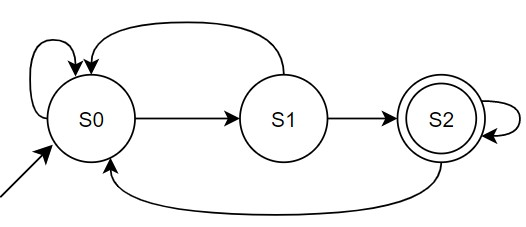

Linguagens Formais
MEF & Regex
Definição
Linguagem Formal: um conjunto de itens de uma linguagem regular é uma coleção finita de ítens que podem ser definidos por meio de um alfabeto $\Sigma$ e contém as strings $\emptyset$, $\{\varepsilon\}$ e $\{a\}$ para todo e qualquer $a \in \Sigma$.
Linguagem Regular: um conjunto de itens de uma linguagem regular é uma coleção finita de ítens que podem ser definidos por meio de um alfabeto $\Sigma$ e contém as strings $\emptyset$, $\{\varepsilon\}$ e $\{a\}$ para todo e qualquer $a \in \Sigma$. Este conjunto é fechado em relação as operações de união, concatenação e fechamento de Kleene.
Linguagens Formais e Regulares
Linguagens formais são aquelas que podem ser definidas por máquinas de estado finito, determinísticas ou não, e por expressões regulares. Atendendo ao Teorema de Kleene . Isto significa que podemos criar uma máquina de estado finito (MEF) equivalente a uma expressão regular (Regex) ou uma expressão regular equivalente a uma máquina de estados finitos. De tal forma que: $$MEF \equiv Regex$$
Máquinas de Estado Finito
Um máquina de estados finitos é uma abstração matemática definida pela 5-tupla, com apenas cinco conceitos:
- $S$: um conjunto finito de estados;
- $\Sigma$: um alfabeto de entrada finito;
- $\delta: S\times \Sigma \rightarrow S$: um conjunto finito funções de transição;
- $s_0$: um estado inicial;
- $A \subseteq S$: um conjunto finito de estados de aceitação;
$$MEF=\{S, \Sigma, \delta, s_0, A\}$$
Estados e Transições
Estados: pontos estáveis no processo de computação, representados por círculos.
Estado inicial: estado onde a máquina inicia o processamento, um estado com uma seta apontada para ele.
Estados intermediários: todos os estados intermediários no processamento.
Estado final: se a string for corretamente processada, a máquina deverá assumir este estado.
Transições: ato de mudar de um estado para outro durante a computação. Representadas por uma seta com origem em um estado e destino no estado seguinte.
Conceitos Adicionais
$\Sigma^*$ é o conjunto de todos os strings, de comprimento maior que $0$ que podem ser criadas a partir de $\Sigma$.
$L(MEF)=\{w|\delta^*(s_0,w)\in A\}$ é o conjunto de todas as strings aceitas por $MEF$.
Chamamos o conjunto $L(MEF)$ de Linguagem da $MEF$.
Aceitação ou identificação
Uma string $w$ será aceita por uma $MEF$ se, e somente se, depois que $MEF$ terminar o processamento de $w$, $MEF$ esteja parada em um dos estados de aceitação do conjunto $A$ que define esta máquina.
Neste caso, dizemos que a $MEF$ aceita a string $w$.
Representação
Podemos representar uma $MEF$ com três notações diferentes:
- Uma lista de elementos na $5-tupla$.
- Uma tabela de transição.
- Um diagrama de transição.
Caberá a você escolher a representação mais adequada para resolver o problema, ou a representação mais adequada para o seu entendimento do problema.
Algebricamente
$MEF=\{S, \Sigma, \delta, s_0, A\}$
$MEF=\{\{s_0, s_1, s_2\}, \{0,1\}\\ \{\delta_{(s_0,0)}=s_1, \\ \delta_{(s_0,1)}=s_0, \\ \delta_{(s_1,0)}=s_2, \\ \delta_{(s_1,1)}=s_0, \\ \delta_{(s_2,0)}=s_2, \\ \delta_{(s_2,1)}=s_0\}, s_0 = s_0, A=\{s_2\} \}$
Tabela de Transição
| $\delta$ | $0$ | $1$ |
|---|---|---|
| $s_0$ | $s_1$ | $s_0$ |
| $s_1$ | $s_2$ | $s_0$ |
| $s_2$ | $s_2$ | $s_0$ |
Existem pelo menos duas formas de se representar uma tabela de transição. Clique aqui para explicar que formas são estas e qual a diferença entre elas.
Diagrama de Transição
Existem várias formas de se representar o diagrama de transição. Nesta disciplina usaremos:

Exemplo 1
Uma máquina de estados comum em ambientes de comunicação de dados é a máquina de detecção de paridade. Este tipo de máquina é capaz de detectar a paridade de um conjunto de bits, fornecidos como entrada de forma sequêncial.
Esta máquina conta o número de símbolos $1$ em uma string do alfabeto $\Sigma_{bin} =\{0,1\}$. Qualquer número para de $1$ é paridade par. Lembre-se nenhum $1$ é par. Coisas das regras de paridade.
Exemplo 2
Cabe a você fazer uma máquina de paridade ímpar. Esta máquina irá receber uma linguagem definida pelo alfabeto $\Sigma_{bin} =\{0,1\}$ e reconhecer todos os strings cuja paridade seja ímpar. Ou seja, que o número de símbolos $1$ em uma determinada string seja ímpar
Lembre-se nenhum $1$ é par.
Clique aqui e envie sua simulação para revisão
Pausa para o Gatinho
 Foto de Marcel
Friedrich on Unsplash
Foto de Marcel
Friedrich on Unsplash
Teorema de Kleene
O Teorema de Kleene afirma que, para que uma linguagem seja considerada formal, ela deve ser definida por: expressões regulares e máquinas de estado finitas.
Isto significa que, com um pouco de álgebra é possível transformar uma em outra.
Hardware em Software?.
Expressões Regulares
Expressões regulares são uma notação algébrica, criada por Stephen Kleene, para representar uma determinada linguagem $L$ dado um alfabeto $\Sigma$ qualquer.
A nós interessam as linguagens regulares.
As Linguagens regulares são as linguagens formais que são fechadas nas operações de união, concatenação e fechamento de Kleene.
Fechamento - Closure
Dizemos que um determinado conjunto $A$ é fechado em relação a uma operação $OP$. Se, e somente se, quando aplicamos a operação $OP$ a qualquer item do conjunto $A$ o resultado continua sendo parte do conjunto $A$.
A operação $OP$ altera o item mas o resultado desta alteração ainda é parte do conjunto $A$. A multiplicação altera o item, mas, o resultado, ainda faz parte do conjunto dos inteiros.
O conjunto dos inteiros é fechado em relação soma, subtração e multiplicação. Contudo, não é fechado em relação a divisão.
O resultado de algumas divisões executadas entre inteiros, não faz parte do conjunto dos inteiros.
União
Dados os conjunto $L_1=\{a,b,c,eg,hf\}$ e $L_2=\{ea,af\}$ definimos a união entre estes conjuntos como:
$L_1 \cup L_2=\{a,b,c,eg,hf,ea,af\}$
Em algumas disciplinas usamos o símbolo $+$ para representar a união, se for o caso, teremos:
$L_1 + L_2=\{a,b,c,eg,hf,ea,af\}$
Em outros casos podemos usar uma barra vertical $|$ para representar a união.
Concatenação
Definimos a concatenação entre dois conjuntos $ L_1 \land L_2 $ como:
$ L= L_1 \cdot L_2 = \{ xy | x \in L_1, y \in L_2 \}$
Não é coincidência o uso do símbolo do produto escalar para representar a concatenação.
O produto escalar representa perfeitamente a operação de concatenação entre dois conjuntos.
Concatenação - Exemplos
As casas do Tabuleiro de Xadrez são nomeadas usando o conjunto resultado da operação entre $ L_1 \land L_2 $ desde que:
$ L_1 = \{ a, b, c, d, e, f, g, h \} \land L_2 = \{ 1, 2, 3, 4, 5, 6, 7, 8 \}$
Contudo, as casas jámais são nomeadas usando o conjunto:
$ L_1 = \{ 1, 2, 3, 4, 5, 6, 7, 8 \} \land L_2 = \{ a, b, c, d, e, f, g, h \}$
Você consegue explicar porquê?
No mundo do Xadrez temos $ L_1 = F \wedge L_2 = R$.
Fechamento de Kleene
A operação Kleene Star, ou Fechamento de Kleene, ou só fechamento (closure), pode ser definida, de forma intuitiva, como sendo o conjunto formado pela união de todas as formas possíveis de concatenar qualquer número de cópias das strings da linguagem $L$. Esta operação é representada por um asterisco $*$, de tal forma que:
$ L^* = \{ \varepsilon \} \cup L \cup L \cdot L \cup L \cdot L \cdot L \cup . . . \}$
Na prática fica mais claro!
Fechamento de Kleene - Exemplo
Considerando a linguagem $ L=\{ 0,1 \}$ teremos:
- $L^0 = \{ \varepsilon \}$
- $L^1=\{ 0,1 \}$
- $L^2=L \cdot L^1 = \{ 00,01,10,11 \}$
- $L^3= \{ 000,001,010,011,100,101,110,111\}$
- $L^*=\{ \varepsilon,000,001,010,011,100,101,110,111,1000… \}$
Representando a União da Concatenação de todos os strings possíveis
Identidades das Expressões Regulares
considerando a linguagem $ L_1,L_2 e L_3 $
|
|
O uso destas entidades simplifica a análise das expressões regulares de forma algébrica.
Material de apoio
Você pode baixar o material de apoio clicando aqui